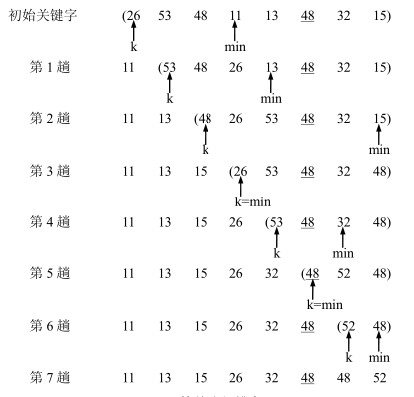

简单选择排序的算法
第一趟，从 n 个元素中找出关键字最小的元素与第一个元素交换；
第二趟，在从第二个元素开始的 n-1 个元素中再选出关键字最小的元素与第二个元素交换；
如此，第 k 趟，则从第 k 个元素开始的 n-k+1 个元素中选出关键字最小的元素与第 k 个元素交换，
直到整个序列按关键字有序。

简单选择排序的实现
import java.util.Arrays;
public class TestSelectSort {
public static void sort(int arr[]) {
int temp = 0;
for (int i = 0; i < arr.length - 1; i++) {
// 认为目前的数就是最小的, 记录最小数的下标
int minIndex = i;
for (int j = i + 1; j < arr.length; j++) {
if (arr[minIndex] > arr[j]) {
// 修改最小值的下标
minIndex = j;
}
}
// 当退出for就找到这次的最小值
if (i != minIndex) {
temp = arr[i];
arr[i] = arr[minIndex];
arr[minIndex] = temp;
}
}
}
public static void main(String[] args) {
int arr [] = {26, 53,48,11,13,48,32,15};
sort(arr);
System.out.println(Arrays.toString(arr));
}
}
简单选择排序的分析
空间效率：显然简单选择排序只需要一个辅助空间。
时间效率：在简单选择排序中，所需移动元素的次数较少，在待排序序列已经有序的情况下，
简单选择排序不需要移动元素，在最坏的情况下，即待排序序列本身是逆序时，则移
动元素的次数为 3(n-1)。然而无论简单选择排序过程中移动元素的次数是多少，在任何情况
下，简单选择排序都需要进行n(n-1)/2 次比较操作，因此简单选择排序的时间复杂度为Ο(n2 )。
稳定性：不稳定